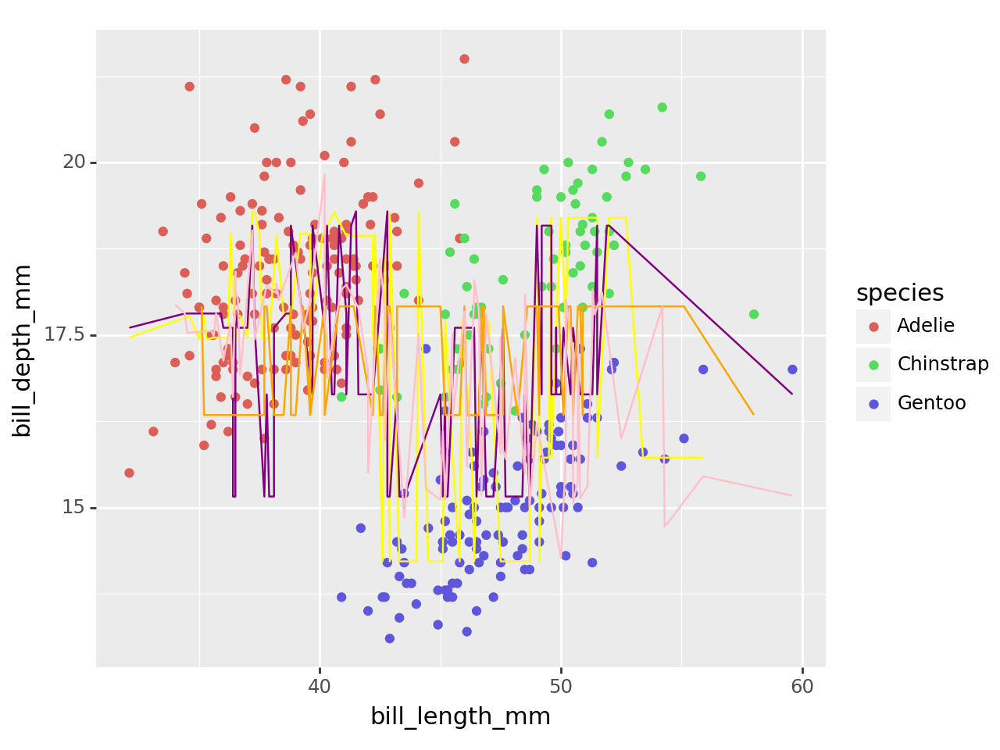
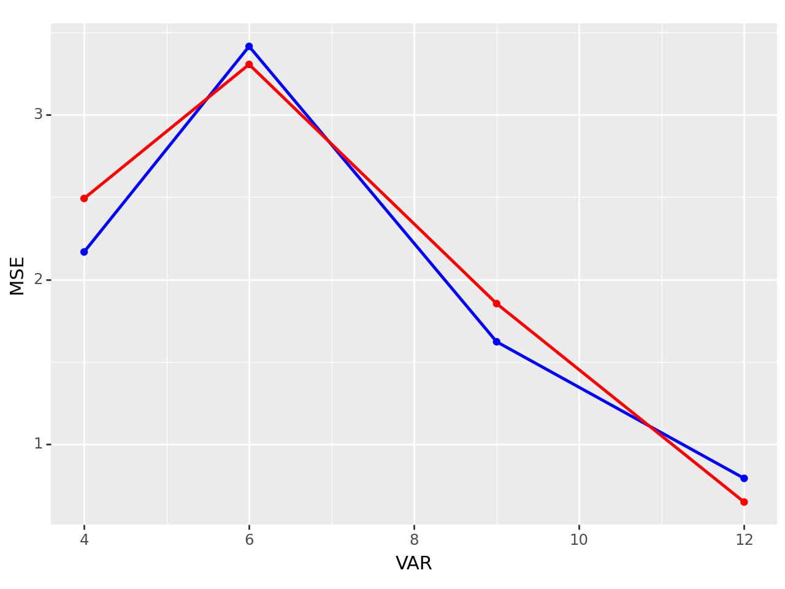

import pandas as pd
from palmerpenguins import load_penguins
from sklearn.pipeline import Pipeline
from sklearn.linear_model import LinearRegression
from sklearn.metrics import r2_score
from sklearn.preprocessing import OneHotEncoder
from sklearn.model_selection import train_test_split
from sklearn.compose import ColumnTransformer
from sklearn.preprocessing import PolynomialFeatures
from sklearn.metrics import mean_squared_error
from plotnine import ggplot, aes, geom_point, geom_line, geom_smoothPalmer Penguins Modeling
Import the Palmer Penguins dataset and print out the first few rows.
Suppose we want to predict bill_depth_mm using the other variables in the dataset.
Dummify all variables that require this.
from palmerpenguins import load_penguins
penguins = load_penguins()
print(penguins.head()) species island bill_length_mm bill_depth_mm flipper_length_mm \
0 Adelie Torgersen 39.1 18.7 181.0
1 Adelie Torgersen 39.5 17.4 186.0
2 Adelie Torgersen 40.3 18.0 195.0
3 Adelie Torgersen NaN NaN NaN
4 Adelie Torgersen 36.7 19.3 193.0
body_mass_g sex year
0 3750.0 male 2007
1 3800.0 female 2007
2 3250.0 female 2007
3 NaN NaN 2007
4 3450.0 female 2007 penguins = penguins.dropna()
X = penguins.drop('bill_depth_mm', axis = 1)
y = penguins['bill_depth_mm']
X_train, X_test, y_train, y_test = train_test_split(X,y)
## Preprocessing One-hot-encode
## Model spec: Linear Regression
# define the dunctions into a shorter term
lr = LinearRegression()
enc = OneHotEncoder()
# Creating a column transformer to specify which column to dummify
ct = ColumnTransformer(
[('dummify_s', enc, ['species']),
('dummify_i', enc, ['island']),
('dummify_se', enc, ['sex'])]
)
# Creating a pipeline that the data will go through, first column transformer, then linear regression
my_pipeline = Pipeline(
[('dummify_everything', ct), ('ols', lr)]
)
fitted_pipeline1 = my_pipeline.fit(X_train, y_train)
predict1 = fitted_pipeline1.predict(X_test)
X_test['predict'] = predict1
X_test1 = X_test
MSE1 = mean_squared_error(y_test, predict1)
print(MSE1)
predict11 = fitted_pipeline1.predict(X_train)
X_train['predict'] = predict11
X_train1 = X_train
MSE11 = mean_squared_error(y_train, predict11)
print(MSE11)0.7935376469198158
0.6496427050401302penguins = penguins.dropna()
X = penguins.drop('bill_depth_mm', axis = 1)
X = X.drop('species', axis = 1)
y = penguins['bill_depth_mm']
X_train, X_test, y_train, y_test = train_test_split(X,y)
## Preprocessing One-hot-encode
## Model spec: Linear Regression
# define the dunctions into a shorter term
lr = LinearRegression()
enc = OneHotEncoder()
# Creating a column transformer to specify which column to dummify
ct = ColumnTransformer(
[('dummify_i', enc, ['island']),
('dummify_se', enc, ['sex'])]
)
# Creating a pipeline that the data will go through, first column transformer, then linear regression
my_pipeline = Pipeline(
[('dummify_everything', ct), ('ols', lr)]
)
fitted_pipeline2 = my_pipeline.fit(X_train, y_train)
predict2 = fitted_pipeline2.predict(X_test)
X_test['predict'] = predict2
X_test2 = X_test
MSE2 = mean_squared_error(y_test, predict2)
print(MSE2)
predict21 = fitted_pipeline2.predict(X_train)
X_train['predict'] = predict21
X_train2 = X_train
MSE21 = mean_squared_error(y_train, predict21)
print(MSE21)1.6222655257590535
1.8540224579849935penguins = penguins.dropna()
X = penguins.drop('bill_depth_mm', axis = 1)
X = X.drop('species', axis = 1)
X = X.drop('island', axis = 1)
y = penguins['bill_depth_mm']
X_train, X_test, y_train, y_test = train_test_split(X,y)
## Preprocessing One-hot-encode
## Model spec: Linear Regression
# define the dunctions into a shorter term
lr = LinearRegression()
enc = OneHotEncoder()
# Creating a column transformer to specify which column to dummify
ct = ColumnTransformer(
[('dummify_se', enc, ['sex'])]
)
# Creating a pipeline that the data will go through, first column transformer, then linear regression
my_pipeline = Pipeline(
[('dummify_everything', ct), ('ols', lr)]
)
fitted_pipeline3 = my_pipeline.fit(X_train, y_train)
predict3 = fitted_pipeline3.predict(X_test)
X_test['predict'] = predict3
X_test3 = X_test
MSE3 = mean_squared_error(y_test, predict3)
print(MSE3)
predict31 = fitted_pipeline3.predict(X_train)
X_train['predict'] = predict31
X_train3 = X_train
MSE31 = mean_squared_error(y_train, predict31)
print(MSE31)3.4151344694682613
3.3056049693278613penguins = penguins.dropna()
X = penguins.drop('bill_depth_mm', axis = 1)
X = X.drop('species', axis = 1)
X = X.drop('island', axis = 1)
X = X.drop('sex', axis = 1)
print(X)
y = penguins['bill_depth_mm']
X_train, X_test, y_train, y_test = train_test_split(X,y)
## Preprocessing One-hot-encode
## Model spec: Linear Regression
# define the dunctions into a shorter term
lr = LinearRegression()
enc = OneHotEncoder()
# Creating a pipeline that the data will go through, first column transformer, then linear regression
my_pipeline = Pipeline(
[('ols', lr)]
)
fitted_pipeline4 = my_pipeline.fit(X_train, y_train)
predict4 = fitted_pipeline4.predict(X_test)
X_test['predict'] = predict4
X_test4 = X_test
MSE4 = mean_squared_error(y_test, predict4)
print(MSE4)
predict41 = fitted_pipeline4.predict(X_train)
X_train['predict'] = predict41
X_train4 = X_train
MSE41 = mean_squared_error(y_train, predict41)
print(MSE41) bill_length_mm flipper_length_mm body_mass_g year
0 39.1 181.0 3750.0 2007
1 39.5 186.0 3800.0 2007
2 40.3 195.0 3250.0 2007
4 36.7 193.0 3450.0 2007
5 39.3 190.0 3650.0 2007
.. ... ... ... ...
339 55.8 207.0 4000.0 2009
340 43.5 202.0 3400.0 2009
341 49.6 193.0 3775.0 2009
342 50.8 210.0 4100.0 2009
343 50.2 198.0 3775.0 2009
[333 rows x 4 columns]
2.1673492477026306
2.4921448463422897data = { 'MSE': [MSE4, MSE3, MSE2, MSE1], 'VAR': [4, 6, 9, 12], 'MSE2': [MSE41,MSE31,MSE21,MSE11]}
df = pd.DataFrame(data)
print(df) MSE VAR MSE2
0 2.167349 4 2.492145
1 3.415134 6 3.305605
2 1.622266 9 1.854022
3 0.793538 12 0.649643Let’s use the other variables to predict bill_depth_mm. Prepare your data and fit the following models on the entire dataset:
- Four different models, each containing a different set of predictor variables
Create a plot like the right plot of Fig 1. in our Model Validation chapter with the training and test error plotted for each of your four models.
Which of your models was best?
(ggplot(penguins)
+ aes(y='bill_depth_mm', x='bill_length_mm', color = 'species')
+ geom_point()
+ geom_line(X_test1, aes(x = 'bill_length_mm', y='predict'), color = 'yellow')
+ geom_line(X_test2, aes(x = 'bill_length_mm', y='predict'), color = 'purple')
+ geom_line(X_test3, aes(x = 'bill_length_mm', y='predict'), color = 'orange')
+ geom_line(X_test4, aes(x = 'bill_length_mm', y='predict'), color = 'pink')
)
<Figure Size: (640 x 480)>(ggplot(df)
+ geom_point(aes(y='MSE', x='VAR'), color = 'blue')
+ geom_smooth(aes(y='MSE', x='VAR'), color = 'blue')
+ geom_point(aes(y='MSE2', x='VAR'), color = 'red')
+ geom_smooth(aes(y='MSE2', x='VAR'), color = 'red')
)C:\Users\tuke-\anaconda3\Lib\site-packages\plotnine\stats\smoothers.py:330: PlotnineWarning: Confidence intervals are not yet implemented for lowess smoothings.
C:\Users\tuke-\anaconda3\Lib\site-packages\plotnine\stats\smoothers.py:330: PlotnineWarning: Confidence intervals are not yet implemented for lowess smoothings.
<Figure Size: (640 x 480)>Based on this comparison, the training and test data both performed very similarly in therms of MSE and we can see that the MSE will be better the more variables we use in this case. The model with 12 predictor variables gave us an MSE below 1. It is interesting to note that having Sex as the only categorical variable actually made the model perform worse with the highest MSE.